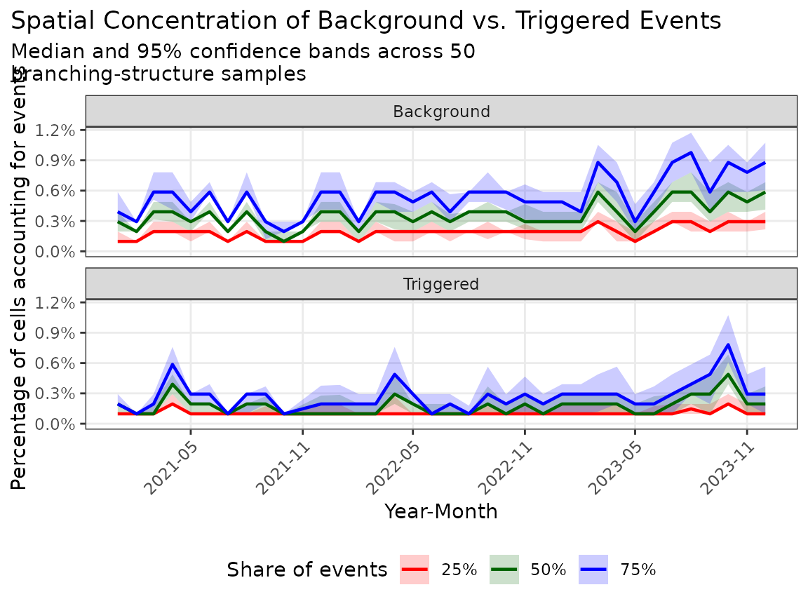

Uncertainty quantification for the branching structure
Source:vignettes/branching-structure-uq.rmd
branching-structure-uq.rmdThis vignette documents the functions in
sampling_branching.R and shows a complete worked example on
the package’s built-in sim_events / sim_region
data: fit the model, sample the branching structure 50 times, and track
how the spatial concentration of background and
triggered events evolves month by month, with
confidence bands instead of a single point estimate.
library(spHawkes)
library(dplyr)
#>
#> Attaching package: 'dplyr'
#> The following objects are masked from 'package:stats':
#>
#> filter, lag
#> The following objects are masked from 'package:base':
#>
#> intersect, setdiff, setequal, union
library(tidyr)
library(spatstat.geom)
#> Loading required package: spatstat.data
#> Loading required package: spatstat.univar
#> spatstat.univar 3.2-1
#> spatstat.geom 3.8-4
library(ggplot2)Why sample the branching structure at all
fit_semihawkes() gives every event a single number,
bgprobs[i]: the probability that event i is a
background event rather than triggered by some earlier event
j. That number is an average over everything that could
have happened, not a decision. Two common ways of turning it into a
decision are:
-
Hard threshold (
bgprobs[i] >= 0.5): fast, but throws away the uncertainty. Two events withbgprobs = 0.51andbgprobs = 0.99are treated identically. -
Stochastic declustering: draw a proper Monte Carlo
sample from the branching structure’s posterior – for each event, flip a
coin weighted by
bgprobs[i]and, if triggered, pick which parent proportionally to the fitted excitation weights. Repeat this many times and every downstream summary (event counts, spatial concentration, hotspot maps) comes with a distribution instead of a single number.
sampling_branching.R implements the second approach,
reusing the exact objects fit_semihawkes() and
trigger_pairs()/trigger_pair_weights() already
produce – no new pairwise computation is needed.
Function reference
sample_branching(bgprobs, pairs, pair_weights)
Draws one realization of the branching structure.
For every event i: draw u ~ Uniform(0, 1); if
u < bgprobs[i], mark it background (0);
otherwise walk the cumulative excitation weights of i’s
candidate parents (pairs$j where pairs$i == i)
until they exceed u, and assign that parent’s row index.
Returns a "semihawkes_branching_sample" object with one
element, mark.
sample_branching_multi(bgprobs, pairs, pair_weights, n_samples = 100, seed = NULL)
Calls sample_branching() n_samples times
and returns a list of samples. This is the Monte Carlo ensemble
everything else in this vignette is built on.
check_branching_weights(bgprobs, pairs, pair_weights, tol = 1e-6)
A pre-flight check: for every event i, verifies that
bgprobs[i] + sum(pair_weights[pairs$i == i]) equals
1. This has to hold for sample_branching()’s
u to be partitioned correctly between “background” and each
candidate parent. Also flags events that have
bgprobs[i] < 1 but no candidate parents in
pairs – a sign that pairs was built with
different window_days/window_dist than the fit
being sampled.
Worked example: sim_events
sim_events was simulated with a known branching ratio
(A = 0.35), a 300 m / 5-day triggering kernel, and 260 of
375 events (69.3%) actually background. These generating values are
known, so fit$A and the sampling below can be compared with
them. The fit limits the triggering kernel to 1 km from each event, a
few times the 300 m scale: a much wider reach lets the kernel’s tail
absorb clustering in the background and inflates A.
cache_dir <- tempfile("crime_marks_")
fit <- fit_semihawkes(
points = sim_events,
region = sim_region,
date_col = "date",
cell_size = 250,
cache_dir = cache_dir,
trigger_window_days = 90,
trigger_window_dist = 1000,
trigger_spatial_args = list(x_range = 1000),
n_iter = 60,
verbose = FALSE
)
fit$A # the generating value was 0.35
#> [1] 0.3476877
fit$stop_reason
#> [1] "llik_converged"The estimated branching ratio is 0.35, against the generating value of 0.35. The fit attributes about 117 of the 375 events to triggering, where the simulation triggered 115.
pairs must use the same
window_days/window_dist passed to
fit_semihawkes() – these determine which parents were even
candidates during fitting, and therefore what fit$bgprobs
and pair_weights are consistent with.
pairs <- trigger_pairs(fit$events, window_days = 90, window_dist = 1000)
pair_weights <- trigger_pair_weights(
fit$events, pairs, fit$A, fit$lambda_at_events,
fit$temporal_trigger, fit$spatial_trigger
)
check <- check_branching_weights(fit$bgprobs, pairs, pair_weights)
print(check)
#> <semihawkes_branching_check>
#> max |total - 1| = 2.22e-16
#> events with no candidate parents (bgprobs < 1): 0
#> ok: TRUE
stopifnot(check$ok)
samples <- sample_branching_multi(
fit$bgprobs, pairs, pair_weights,
n_samples = 50, seed = 2026
)
summary <- summarize_branching_samples(samples)
print(summary)
#> <semihawkes_branching_summary>
#> 50 samples
#> median background events: 257
#> IQR: [251.25, 260]summary$median_bg is the single number to report –
e.g. “a median of 257 background events across 50 posterior draws (IQR:
251.25-260)”, read directly from summary$iqr_bg.
Tracking background vs. triggered concentration over time
The goal here is the same spatial-concentration analysis as before
(percentage of grid cells needed to account for 25/50/75% of events each
month), but run separately for background and triggered
events in every sample, so we can compare how spread out or clustered
each process is, and how that changes across the three years of
sim_events.
events_df <- fit$events$events |>
mutate(year_month = as.Date(format(date, "%Y-%m-01")))
city_owin <- as.owin(sim_region)
dimyx_val <- 32
targets <- c(0.25, 0.50, 0.75)
concentration_for_group <- function(events_group, sample_id, group_label) {
year_months <- sort(unique(events_group$year_month))
res <- vector("list", length(year_months))
for (k in seq_along(year_months)) {
ym_date <- year_months[k]
events_ym <- events_group |> filter(year_month == ym_date)
if (nrow(events_ym) == 0) next
ppp_ym <- ppp(x = events_ym$coorx, y = events_ym$coory, window = city_owin)
counts_im <- pixellate(ppp_ym, dimyx = dimyx_val)
counts_im <- as.im(counts_im, W = city_owin)
total_events <- npoints(ppp_ym)
vals <- counts_im$v / total_events
vals <- vals[!is.na(vals)]
vals_sorted <- sort(vals, decreasing = TRUE)
cum_vals <- cumsum(vals_sorted)
perc_cells <- sapply(targets, function(t) {
idx <- which(cum_vals >= t)[1]
if (is.na(idx)) return(NA)
idx / length(vals_sorted)
})
res[[k]] <- data.frame(
year_month = ym_date, sample = sample_id, group = group_label,
perc_cells_25 = perc_cells[1],
perc_cells_50 = perc_cells[2],
perc_cells_75 = perc_cells[3]
)
}
do.call(rbind, res)
}
all_results <- vector("list", length(samples))
for (i in seq_along(samples)) {
events_i <- events_df
events_i$mark <- samples[[i]]$mark
events_bg <- events_i |> filter(mark == 0)
events_trg <- events_i |> filter(mark != 0)
res_bg <- concentration_for_group(events_bg, i, "Background")
res_trg <- concentration_for_group(events_trg, i, "Triggered")
all_results[[i]] <- rbind(res_bg, res_trg)
}
results_all <- do.call(rbind, all_results)
results_long <- results_all |>
pivot_longer(
cols = starts_with("perc_cells_"),
names_to = "threshold",
values_to = "perc_cells"
) |>
mutate(
threshold = factor(
threshold,
levels = c("perc_cells_25", "perc_cells_50", "perc_cells_75"),
labels = c("25%", "50%", "75%")
)
)
confidence_bands <- results_long |>
group_by(year_month, threshold, group) |>
summarise(
median = median(perc_cells, na.rm = TRUE),
lower_95 = quantile(perc_cells, 0.025, na.rm = TRUE),
upper_95 = quantile(perc_cells, 0.975, na.rm = TRUE),
.groups = "drop"
)
p_confidence <- ggplot(confidence_bands,
aes(x = year_month, color = threshold, fill = threshold)) +
geom_ribbon(aes(ymin = lower_95, ymax = upper_95), alpha = 0.2, color = NA) +
geom_line(aes(y = median), linewidth = 0.8) +
facet_wrap(~ group, ncol = 1) +
scale_y_continuous(labels = scales::percent_format(accuracy = 0.1),
limits = c(0, NA)) +
scale_x_date(date_labels = "%Y-%m", date_breaks = "6 months") +
scale_color_manual(values = c("25%" = "red", "50%" = "darkgreen", "75%" = "blue")) +
scale_fill_manual(values = c("25%" = "red", "50%" = "darkgreen", "75%" = "blue")) +
labs(
title = "Spatial Concentration of Background vs. Triggered Events",
subtitle = paste0("Median and 95% confidence bands across ", length(samples),
"\nbranching-structure samples"),
x = "Year-Month", y = "Percentage of cells accounting for events",
color = "Share of events", fill = "Share of events"
) +
theme_bw() +
theme(
# Align the title and subtitle with the left edge of the figure rather
# than the panels, so they are not pushed right by the y-axis label and
# cut off at the figure's right edge.
plot.title.position = "plot",
axis.text.x = element_text(angle = 45, hjust = 1),
panel.grid.minor = element_blank(),
legend.position = "bottom"
)
print(p_confidence)